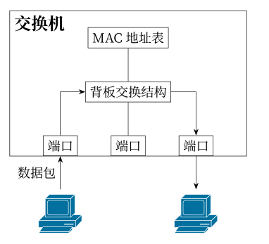
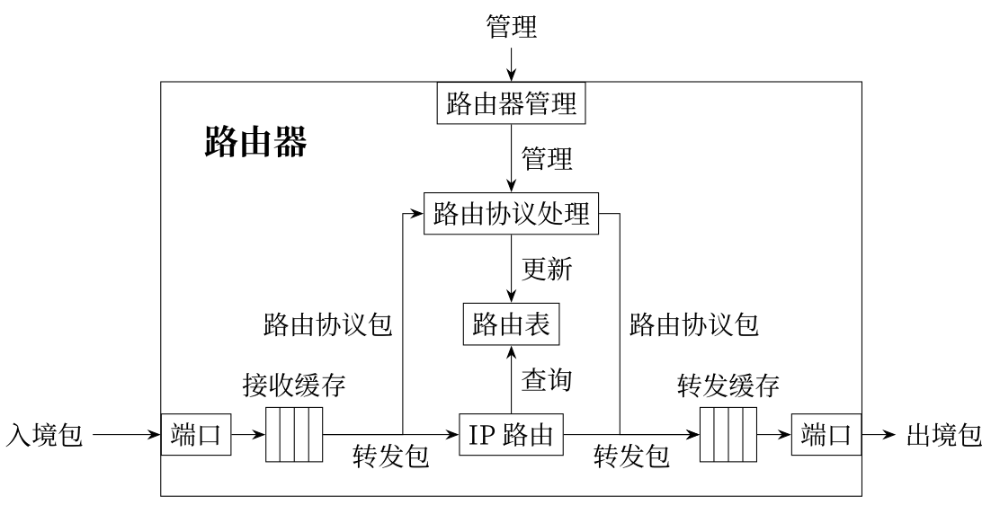
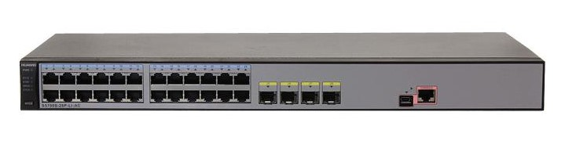
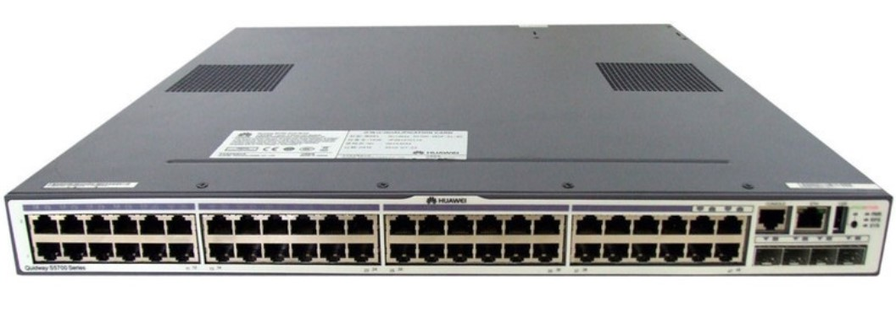
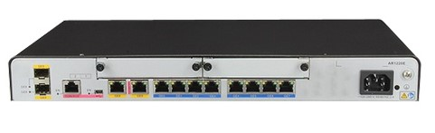

实验硬件设备简介
交换机
交换机（英文：Switch，意为“开关”）是一种用于电信号转发的网络设备，它可以为接入交换机的任意两个网络节点提供独享的电信号通路。交换机在通信系统中完成信息交换功能，其工作原理主要是根据通信两端传输信息的需要，通过人工或设备自动完成的方法，把要传输的信息送到符合要求的相应路由上。
本实验室配备有二层交换机和三层交换机。
二层交换机工作于OSI模型的第2层（数据链路层），故而称为二层交换机。二层交换机能够基于数据链路层的MAC首部信息，进行数据帧或VLAN（Virtual LAN）的传输工作。
三层交换机是一种在二层交换机的基础上增加了路由选择功能的网络硬件，它同时具有几乎二层交换的速度，也能够基于三层网络层的IP首部信息，实现路由选择以及分组过滤等功能。
二层交换机虽然能够通过VLAN技术来分割广播域，但终端之间的数据帧交换必须限定在同一VLAN内。当不同VLAN的终端需要通信时，传统的做法是需要额外添加路由器来实现路由功能。然而，三层交换机则无需其他硬件设备，即可实现VLAN的配置以及VLAN之间的通信过程，大大简化了网络架构和配置流程。
提示
三层交换机最重要的目的是加快大型局域网内部的数据交换，其路由功能也多是围绕这一目的而展开的，所以它的路由功能没有同一档次的专业路由器强，不能完全替代路由器。在企业网和教学网中，一般将三层交换机用在网络的核心层，以连接不同的子网或VLAN。
路由器
路由器是工作在OSI参考模型第三层（网络层）的网络连接设备，它的基本功能是根据数据包的IP地址选择发送路径，转发数据包到相应网络。
路由器的数据转发时基于路由表实现的，每个路由器都会维护一张路由器，根据路由表决定数据包的转发路径。
当路由器接收到一个数据包后，首先对数据包进行校验，如果是发给路由器用于协议处理的数据包，路由器将交给相应模块去处理，而大多数是需要转发的数据包，路由器将查询路由表，然后根据查询结果转发数据包到相应的端口和网络。路由表由多个路由表表项构成，可以由管理者手动设置（即静态路由），也可以根据路由协议自动生成（即动态路由）。
提示
在构建大型的LAN时，需要使用交换机或主机等设备来管理大量的MAC地址信息。当频繁进行广播通信时，设备的负担就会非常大。为减轻设备的负担，需要将LAN划分成一个个子网，而子网间的通信就需要依靠路由器进行了。另外，为了连接互联网，与互联网服务供应商建立连接时，也同样需要用到路由器设备。
交换机和路由器的接口
本实验室主要网络设备均是华为公司的 Quidway S系列交换机和路由器。
实验中用到的二层交换机/三层交换机接口类型较少，主要两种类型的接口，分别是24/48个以太网端口（二层交换机是24个，三层交换机是48个）和一个配置口（Console 口）。以太网端口表示为G0/0/1～G0/0/24（G0/0/48），其中G为千兆以太网GigabitEthernet的缩写，后面数字采用三段式表示，左边第一个数字“0”表示该端口所在模块对应的槽位编号，第二个数字“0”表示子卡号，第三个数字表示该端口在这个模块上的编号，一般从 1 开始。
二层交换机：
三层交换机：
下图是实验用到的路由器，其接口类型相对比较丰富，它有13个固定接口和2个扩展插槽。其中，固定接口在下面一排，从左向右分别是2个光模块接口，1个配置口（RJ45 Console 口和mini-USB类型的Console）、 2个WAN（GE8、GE9）、8个以太网接口（G0/0/0～G0/0/7），上一排是两个SIC扩展插槽，可以插多种接口模块，例如以太网接口模块、IP电话模块、ATM板卡（异步WAN接口卡）等。路由器接口表示规则与交换机类似，也采用三段式表示，不同的是，接口在模块上的编号一般从 0 开始，也就是第三个数字一般从 0 开始编号。
路由器：
